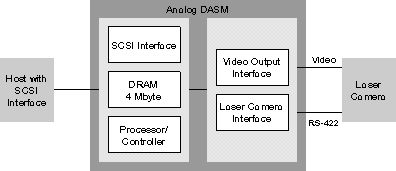

Operating Documentation
Direction 5114043-800, Rev# 9
LightSpeed 3.X Service Methods (Advanced)
Operating Documentation |
A DASM (Data Acquisition System Manager) may be used as the interface between the host computer and the laser camera. The current CT system is capable of using either an “analog” or a “digital” DASM to perform this function.
The “analog” DASM attaches to the host SCSI bus and emulates a SCSI disk drive in function. It accepts high-level commands and 512 x 512 image data from the host via the SCSI bus and sends images and control commands to the laser camera via the camera’s video input and RS-422 serial interface.
The “analog” DASM contains 4 Mbytes of on-board Data Memory, which appears to the host as a SCSI disk drive responding to the SCSI Common Command Set. Data Memory is used for image storage as well as for host command and status handshaking. The host application makes command, status and image transfers by accessing DASM Data Memory through the SCSI bus.
Illustration 1: Analog DASM

The “digital” DASM connects the host’s SCSI port to the laser camera’s control and image data ports. It attaches to the laser imager using separate data and control cables from the Digital Data Output and Camera Control Interface of the DASM to the corresponding inputs of the laser imager.
The Digital Data Output of the digital DASM conforms to all laser camera copper connections. The DASM’s Digital Data Output has RS-485 line drivers and receivers and can be connected up to 250 feet from the laser imager, if the proper cabling is used. This distance can be extended up to 1,000 feet with a SCSI to fiber optic converter.
The DASM’s digital control output accommodates standard RS-232 and RS-422 serial port connections to the laser imager. Digital control can be used at up to 9600 baud.